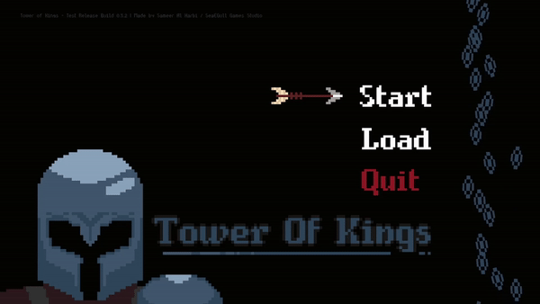

A 2D game designed and developed over the course of three months with
extensive use of programming patterns and architecture to create a clean and
extensible code base.

As part of my 3rd year Games Programming module (AC31009) I designed and developed "Tower of Kings"- A 2D Metroidvania / Action Platformer with Physics
and Story Elements.
As part of this project I naturally had to made a number of game systems to put together into the final game. These have included:
A Custom Animation System based on state machines and a singleton update manager.
A Wrapper based AI system for regular enemies and 3 unique multistage capable bosses.
A Save & Load functionality that saves both player state and enemy positions